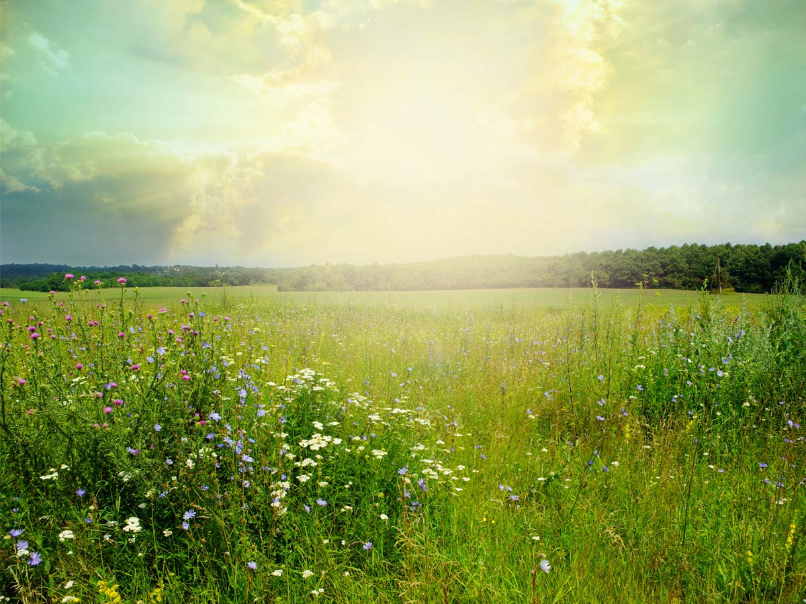
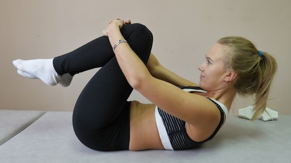
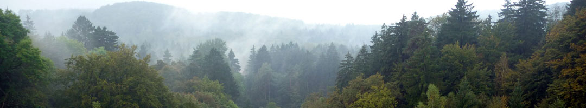
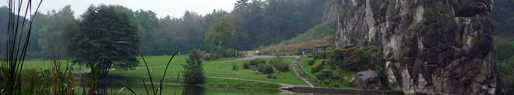
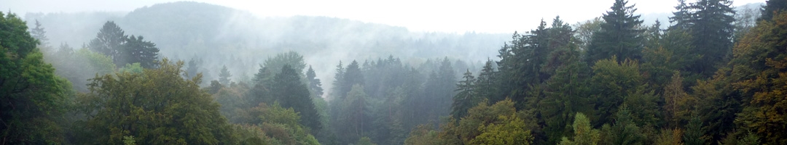

Hatha yoga en mindfulness in Ravenstein. Laagdrempelig, voor iedereen. Bewustwording, flexibiliteit en ontspanning van lichaam en geest.
Eenvoudige oefeningen, door iedereen uit te voeren of aan te passen. Het accent ligt niet op presteren.
Al meer dan 25 jaar yogalessen in Ravenstein. Ervaren en gediplomeerd yogadocent Anja de Been.
Bewustwording, flexibiliteit en ontspanning. De adem als rode draad, de schakel tussen lichaam en geest.
Yoga is een inspiratiebron voor alle facetten van het leven. Een duizenden jaren oude Indiase ervaringswetenschap.
Laagdrempelige lessen op maandag in de Valkenburcht, Ravenstein. Observatie, losmaakoefeningen, yoga en ontspanning.

De meest voorkomende en toegankelijke vorm van yoga. Via lichamelijke oefeningen en ademoefeningen naar meer balans.
Leven met volle aandacht in het hier en nu. Een onlosmakelijk onderdeel van yoga, met bewezen positieve resultaten.
Jarenlang werkzaam geweest in de zorg. In 1985 begonnen met het volgen van yogalessen. Opgeleid aan Samsara in Bilthoven — een gedegen vierjarige en internationaal erkende opleiding, afgerond in 2000.
Sinds 1999 voornamelijk werkzaam als yogadocent in Ravenstein. Met een open en onderzoekende houding, steeds verdiepend in yoga, adem, chi gong, meditatie en mindfulness.
Lees meer over AnjaRust, stilte en bewustwording in de Valkenburcht te Ravenstein.



U bent van harte welkom om op elk moment een vrijblijvende proefles te komen volgen. De kosten zijn € 10.
Recreatiezaal de Valkenburcht, Kasteelseplaats 4, Ravenstein
12:15 – 13:15 | 13:30 – 14:30 | 19:00 – 20:00 | 20:15 – 21:15